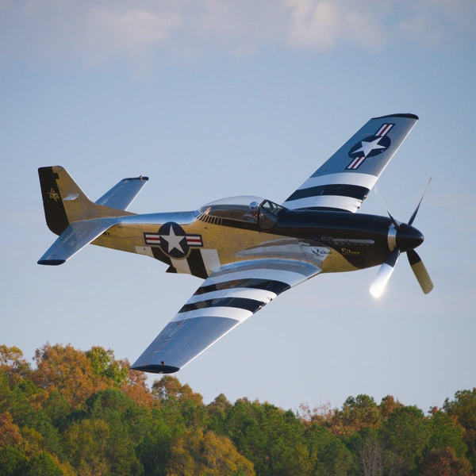

Cyberflight Studios
Photography
Photography built around real moments, striking perspectives, and images that feel alive.
From events and portraits to businesses, action, and creative projects, Cyberflight Studios provides professional photography tailored to the subject and the story you want to tell. Every project is approached individually, with an emphasis on natural moments, strong composition, and imagery that stands out.

Photography Services
- Event Photography
- Portraits
- Business & Branding
- Action & Automotive
- Creative Projects